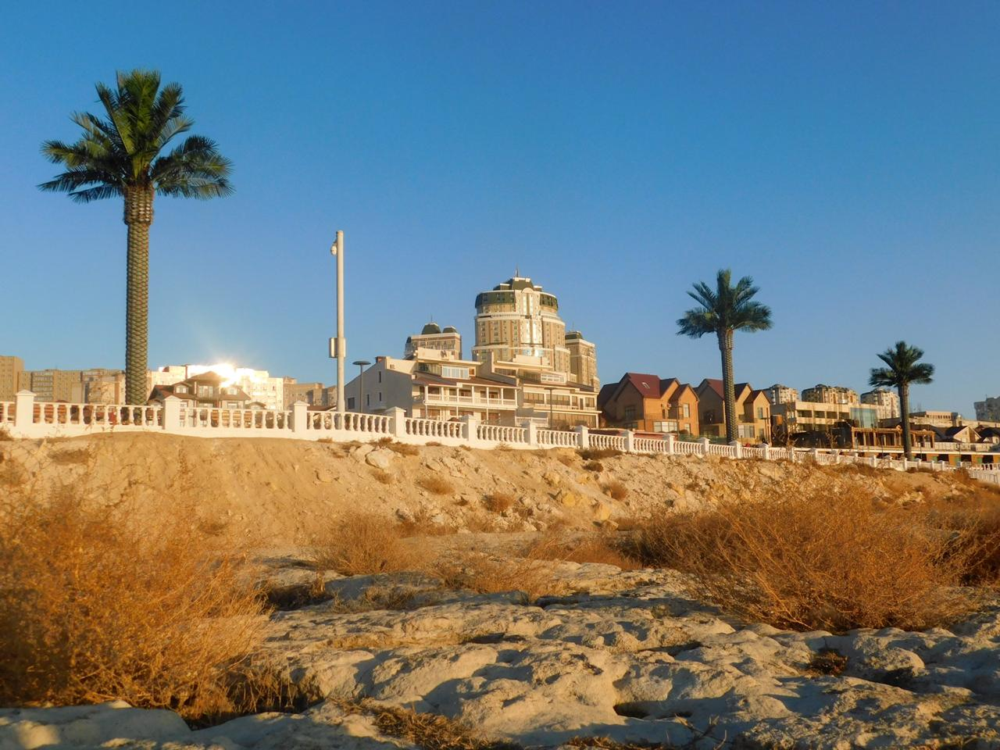

Welcome to Aktau!
Aktau is the young and beautiful city in west Kazakhstan, located on the shore of the biggest lake in the world, Caspian Sea.

Some facts about Aktau
- It was founded in 1963
- It is the centre of Mangystau region
- It is the youngest region centre of Kazakhstan
- The summers are hot and humid in Aktau, but winters are warm
- You can find more facts in Wikipedia page of Aktau
Aktau's History
- It functioned as a camp for miners and petroleum ingeniers first
- After population of the camp increased, it was officially founded as a city in 1963
- People all over the USSR came here to build houses, hospitals, and schools
- The city was called Shevchenko at first, from the foundation year (1963) until Kazakhstan got independence in 1991
- The city is called Aktau since 1991
Aktau and the Caspian Sea
Aktau is the city which is located on the eastern shore of the Caspian Sea. Thanks to Caspian Sea, Aktau is known as one of the touristic cities in Kazakhstan.
Aktau citizens go every summer to Caspian Sea and swim there.Citizens from other cities of Kazakhstan also come to visit Caspian Sea, where they can spend their summer vacations.If you want to know more about the Caspian Sea, you may find the information in our web site's other page about the Caspian Sea.
Aktau and its sights
- MiG Monument at the Victory Mall
- Regional Studies and History Museum
- The Drama Theatre
- Yntymak Square
- Monuments of Kashagan Zhyrau, Zhalau Mynbayev, and Taras Shevchenko
Aktau and its citizens
The population is approximately 190,000 people.